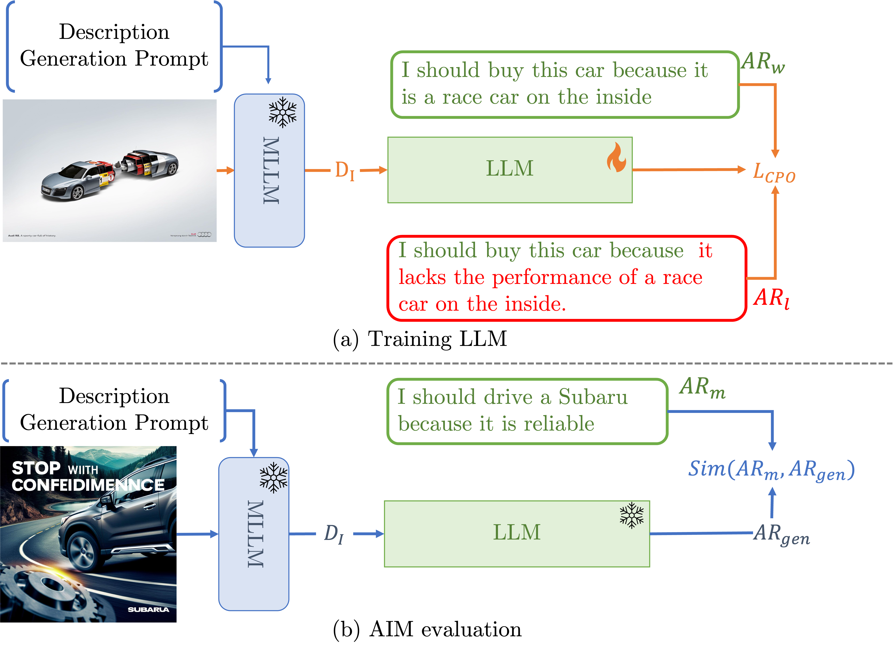
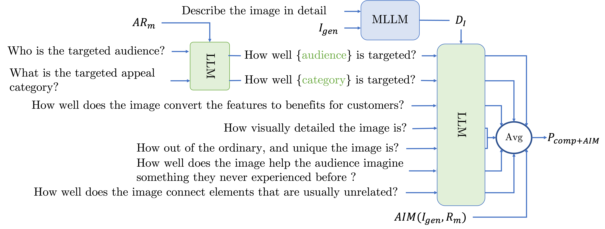
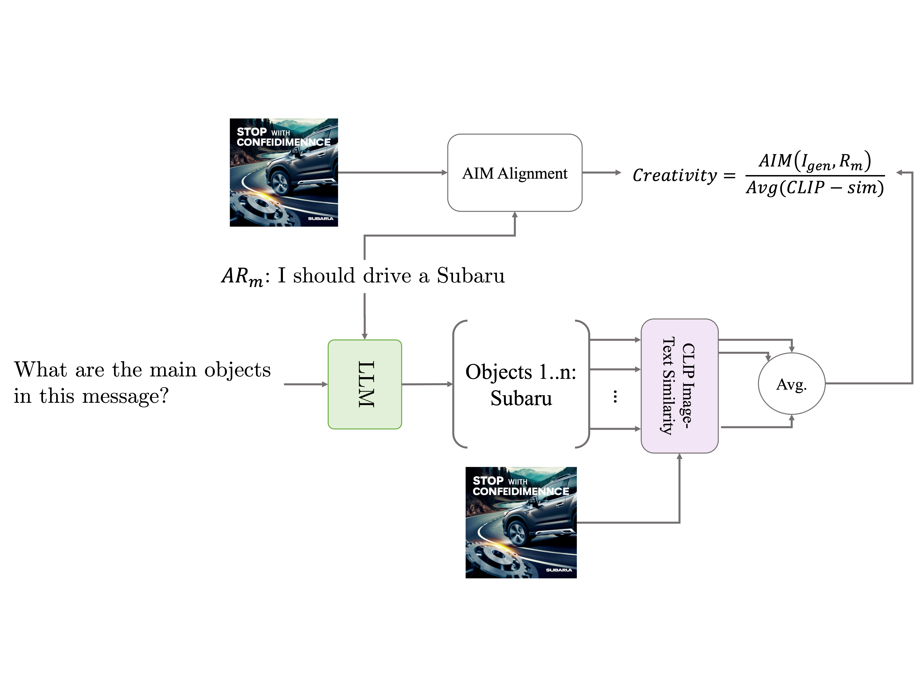
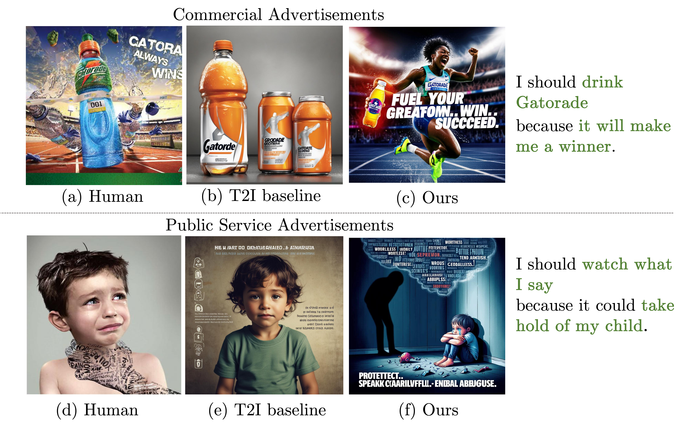
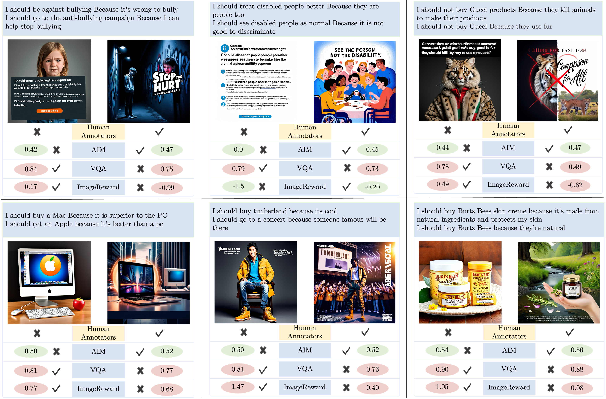
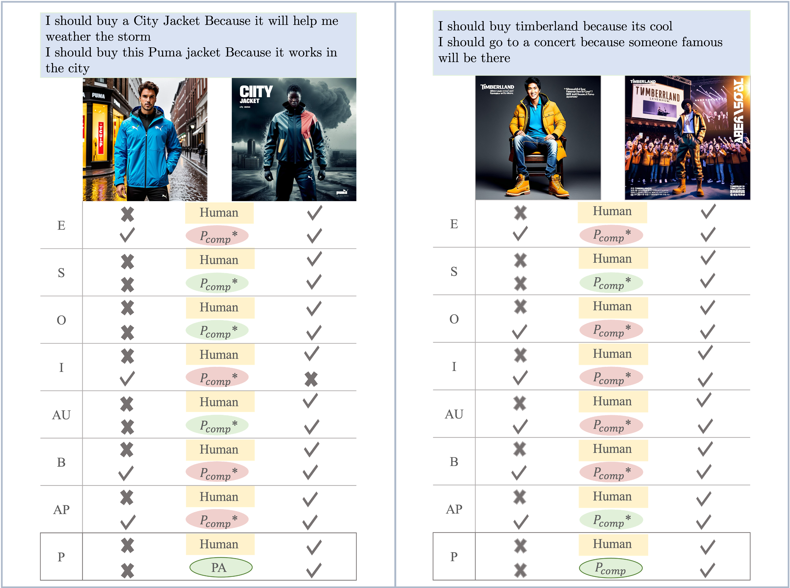
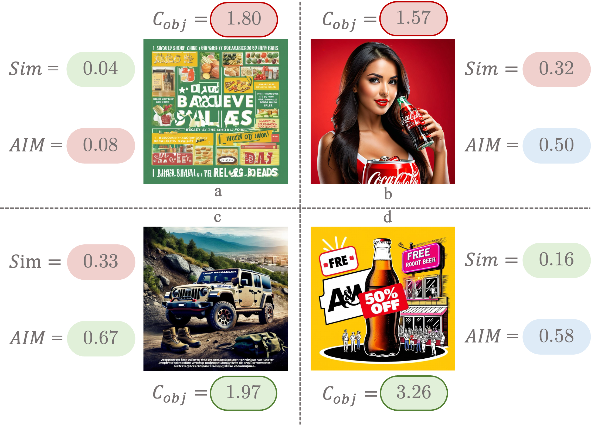

We address the task of advertisement image generation and introduce three evaluation metrics to assess Creativity, prompt Alignment, and Persuasiveness (CAP) in generated advertisement images. Despite recent advancements in Text-to-Image (T2I) generation and their performance in generating high-quality images for explicit descriptions, evaluating these models remains challenging. Existing evaluation methods focus largely on assessing alignment with explicit, detailed descriptions, but evaluating alignment with visually implicit prompts remains an open problem. Additionally, creativity and persuasiveness are essential qualities that enhance the effectiveness of advertisement images, yet are seldom measured. To address this, we propose three novel metrics for evaluating the creativity, alignment, and persuasiveness of generated images. Our findings reveal that current T2I models struggle with creativity, persuasiveness, and alignment when the input text is implicit messages. We further introduce a simple yet effective approach to enhance T2I models’ capabilities in producing images that are better aligned, more creative, and more persuasive.
To address the evaluation gap, the authors propose three novel metrics to assess generated images based on their Creativity, Alignment with the prompt, and Persuasiveness[cite: 1, 5].
This metric evaluates how well a generated image aligns with an implicit message, such as an "action-reason" statement[cite: 1, 24, 28]. [cite_start]The input text often implies a message rather than explicitly describing objects[cite: 3, 24]. The process involves two steps:
The final AIM score is the semantic similarity between the original input message ($AR_m$) and the newly generated statement ($AR_{gen}$)[cite: 28].
Creativity is defined as the image's uniqueness while still effectively conveying the intended ad message[cite: 1, 5, 30]. [cite_start]The metric is calculated as a ratio: the AIM score (for relevance) is divided by the average CLIP similarity between the generated image and the objects explicitly mentioned in the text (to measure uniqueness)[cite: 30].
This metric evaluates an image's ability to be convincing to its intended audience[cite: 1, 32]. [cite_start]It combines scores from multiple components grounded in prior persuasion literature[cite: 1, 6, 37, 42, 45]. [cite_start]An LLM is prompted with questions to score the image's ability to appeal to a specific audience, convert features to benefits, and use rhetorical appeals (Ethos, Pathos, Logos)[cite: 6, 28, 32]. [cite_start]It also scores visual qualities like elaboration, originality, imagination, and synthesis[cite: 28]. [cite_start]The final persuasiveness score is a weighted average of these component scores and the AIM score[cite: 28].







BibTex Code Here